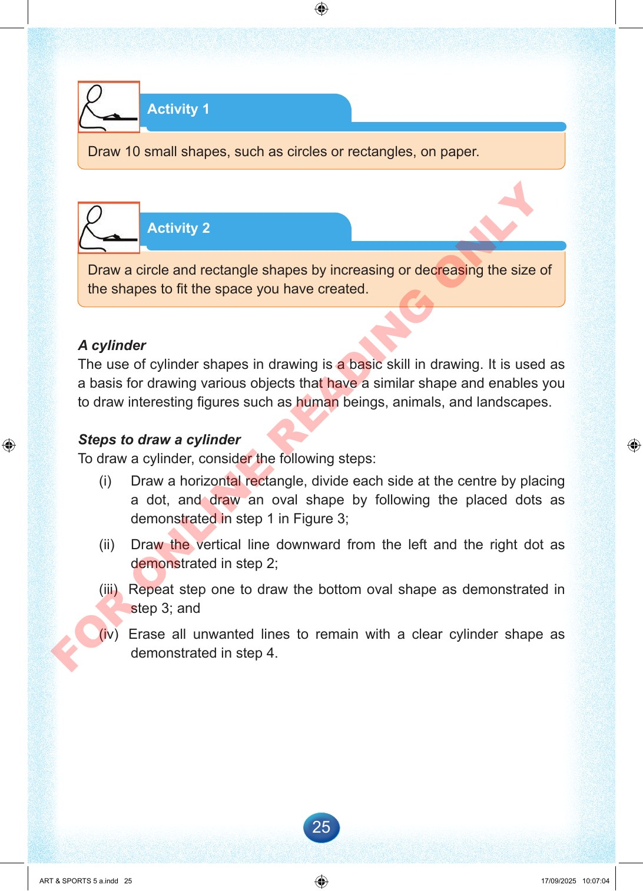

25
Activity
1
Draw
10
small
shapes,
such
as
circles
or
rectangles,
on
paper.
Activity
2
Draw
a
circle
and
rectangle
shapes
by
increasing
or
decreasing
the
size
of
the
shapes
to
fit
the
space
you
have
created.
A
cylinder
The
use
of
cylinder
shapes
in
drawing
is
a
basic
skill
in
drawing.
It
is
used
as
a
basis
for
drawing
various
objects
that
have
a
similar
shape
and
enables
you
to
draw
interesting
figures
such
as
human
beings,
animals,
and
landscapes.
Steps
to
draw
a
cylinder
To
draw
a
cylinder,
consider
the
following
steps:
(i)
Draw
a
horizontal
rectangle,
divide
each
side
at
the
centre
by
placing
a
dot,
and
draw
an
oval
shape
by
following
the
placed
dots
as
demonstrated
in
step
1
in
Figure
3;
(ii)
Draw
the
vertical
line
downward
from
the
left
and
the
right
dot
as
demonstrated
in
step
2;
(iii)
Repeat
step
one
to
draw
the
bottom
oval
shape
as
demonstrated
in
step
3;
and
(iv)
Erase
all
unwanted
lines
to
remain
with
a
clear
cylinder
shape
as
demonstrated
in
step
4.
ART
&
SPORTS
5
a.indd
25
ART
&
SPORTS
5
a.indd
25
17/09/2025
10:07:04
17/09/2025
10:07:04
F
O
R
O
N
L
I
N
E
R
E
A
D
I
N
G
O
N
L
Y